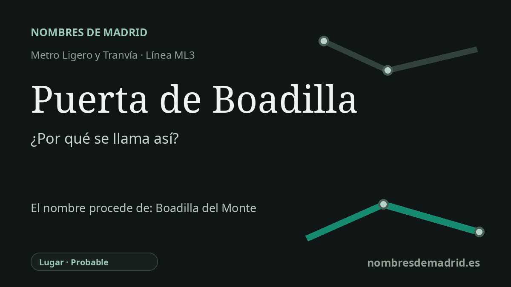

Publicado el · Investigación de Nombres de Madrid · Cómo verificamos cada origen · 6 fuentes consultadas
Respuesta rápida
Puerta de Boadilla es la cabecera exterior de la ML3 y se presenta como la puerta de transporte de Boadilla del Monte. El nombre municipal es medieval y pertenece probablemente a la familia de topónimos Boadilla/Bobadilla, cuyo origen exacto sigue discutido.
La historia del nombre
Puerta de Boadilla recibe su nombre de Boadilla del Monte, el municipio donde se encuentra la estación. La palabra puerta encaja con su función de transporte: es la cabecera exterior de la línea ML3 de Metro Ligero Oeste y se sitúa junto al ámbito del intercambiador local, en la glorieta de la Virgen de la Paz, dentro del barrio de Siglo XXI.
El nombre que hay detrás de la estación es mucho más antiguo que el metro ligero. Boadilla pertenece a una amplia familia de topónimos castellanos con formas Boad-, Bovad- y Bobad-. Toponomasticon Hispaniae incluye Boadilla del Monte en esa serie y recoge formas históricas como Bohadilla, Bobadilla y Boadilla.
El significado exacto de Boadilla no está cerrado. Una posibilidad es una voz de origen germánico y valor arquitectónico relacionada con bóveda, es decir, una construcción abovedada o con arcos; otra es el latino-romance teórico bovata, con el sentido de dehesa boyal, pasto de bueyes o tierra arada por una yunta. Como el diminutivo y los cambios fonéticos posteriores dificultan la prueba, la interpretación mejor respaldada no es solo “pequeña bóveda”, sino “un tipo toponímico Boadilla/Bobadilla discutido, quizá arquitectónico o ganadero”.
También importa el segundo elemento, del Monte. Toponomasticon Hispaniae señala que en el Catastro de Ensenada de 1751 el lugar aún aparece simplemente como Boadilla, mientras que Boadilla del Monte ya figura en 1829 en el diccionario de Miñano. El añadido servía para diferenciar este municipio de otras Boadillas y aludía al terreno montuoso y arbolado del oeste madrileño.
El nombre de transporte llegó con el proyecto contemporáneo de metro ligero. La Comunidad de Madrid documenta la puesta en servicio del tramo Colonia Jardín-Boadilla del Monte el 27 de julio de 2007 y enumera Puerta de Boadilla como parada final, con funciones de intercambiador y aparcamiento. No consta un acuerdo formal de denominación, por lo que el origen del nombre de la estación debe considerarse probable, no plenamente documentado por un acto nominativo.